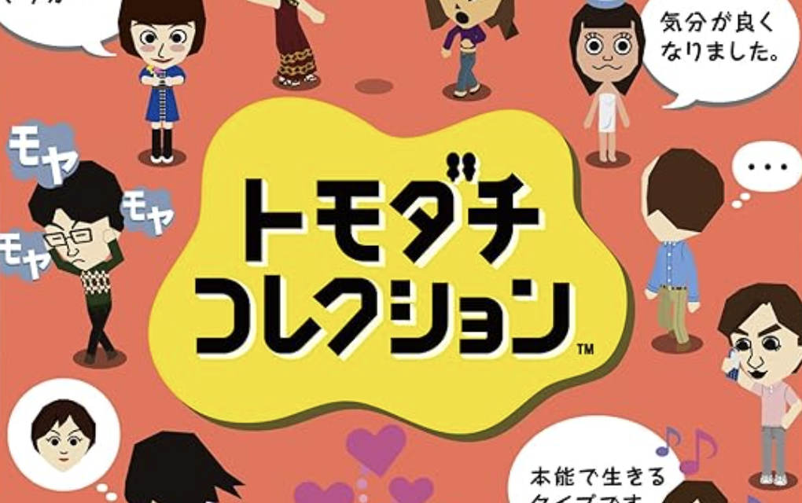
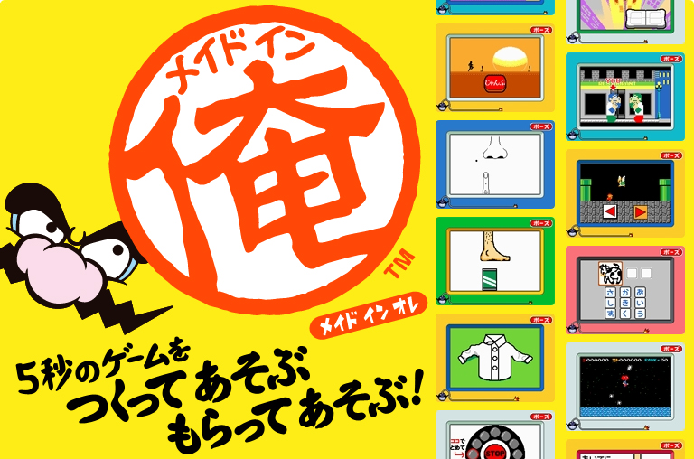

ようこそ、私のポートフォリオへ。
経歴をご紹介いたします。

百瀬響子 ・ ももせきょうこ
- 2001慶應義塾大学 環境情報学部卒業
- 2001任天堂株式会社 入社
- 2010フリーライターとして独立
- 2022株式会社OGA 入社
- 2026株式会社Whatever 業務提携
こちらは、任天堂時代に関わった作品です。

ポケットモンスター
ルビー＆サファイア
Coordination

トモダチコレクション
Direction

メイドイン俺
scenario writing

高速カードバトル
カードヒーロー
scenario writing
こちらは、私がデザインしたウェブページです。

Whateverお茶の水
京都シェアオフィス

或庭 - aruniwa -
タロット占いサロン

nature escape
京都自然写真企画展

and lobby
新時代のAI教室

QUMARI
女性の自律を促すサロン

U-nerior
潜在アーティスト発掘企画
こちらは、私が手掛けた映像作品です。
『Lost in COMPLEX』ドリームコアチャンネル
ドリームコアと呼ばれる、夢の中のような不思議な世界観を表現した映像チャンネルをプロデュースしました。 こちらは代表的な作品で、地下鉄水族館を描いた動画は、20万再生を突破しています。
『大人買いコレクター』おもちゃ紹介チャンネル
登録者100万人を超える、おもちゃチャンネルにて、動画制作を担当。 楽器演奏、ダンボール工作、知育菓子作り、ミニカーカスタマイズなどの様子を撮影編集しました。 こちらは、代表的な作品です。
『オーロラガーデン』スピリチュアルチャンネル
自己実現や開運を目指す人のために、スピリチュアルなメソッドを解説するチャンネル。 企画構成、脚本作成、AIによる人工音声生成。映像および音楽のディレクション等を担当しました。
心理テストやブログなどのライティング実績です。

『きのこHokuto』
心理テスト
Concept / Copywriting

『shinri』
心理テスト
Content Planning / Writing

『Whatever』
Official Blog
Writing

『Whatever East』
キャッチコピー制作
Content Planning / Writing

『AIと哲学』
note
Self Produce / Essay

『MYSTIC MONDAYS』
タロットカード
Writing